Here are some photos from the game Arietta of Spirits.
NOTE: I do not go over the entire game nor show pictures of the whole game so as to not spoil those who are interested in playing the game on their own.
You can also check out my Kumu network!

 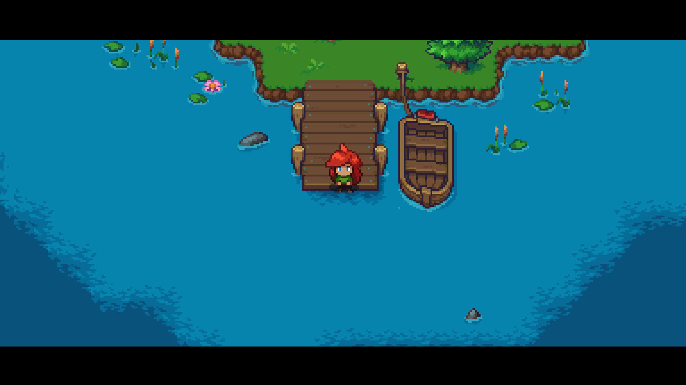
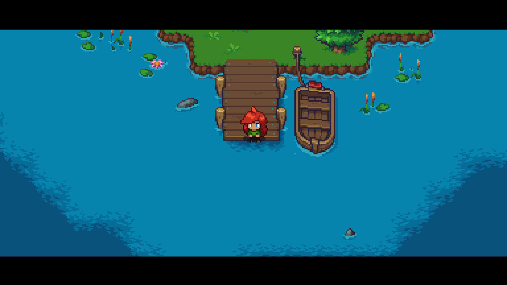
 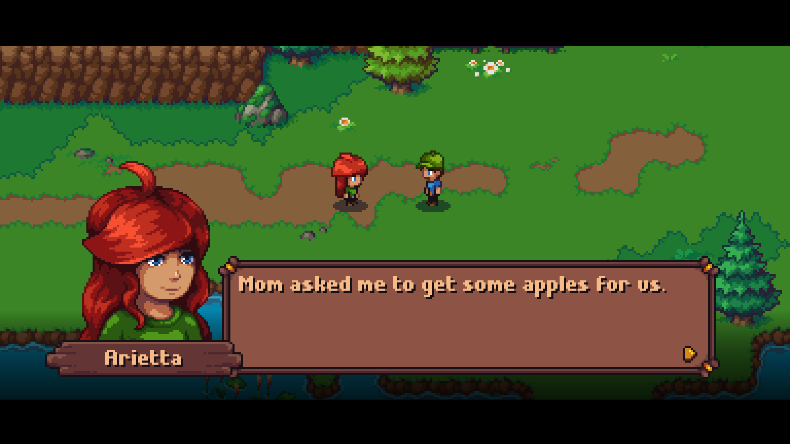
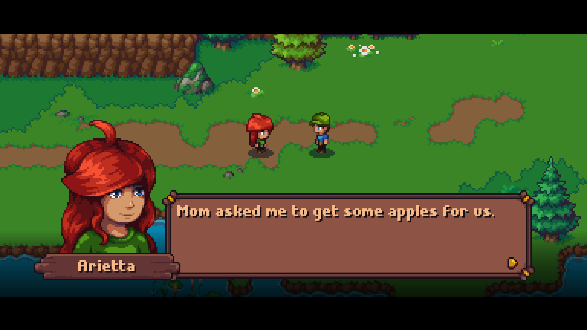


In the world of Arietta, there is ambient music that is great at immersing the player. The character, Arietta, has a personality that is pretty easy for someone to relate to. The graphics are 8-bit other than the close-up character profiles (when specific characters have dialogue).
The game is not very complex. The only thing I had trouble with was the directions I was facing after getting attacked or during fights. For being a demo, you can explore quite a bit. To set apart different sections, there are either buildings, new enemies or a distinctly different set up like for a boss battle.
You get to know Arietta through her dialogue and her interactions with her parents, Arco (shown later), and her grandmother. She is an adventurer at heart and cares about her family.
 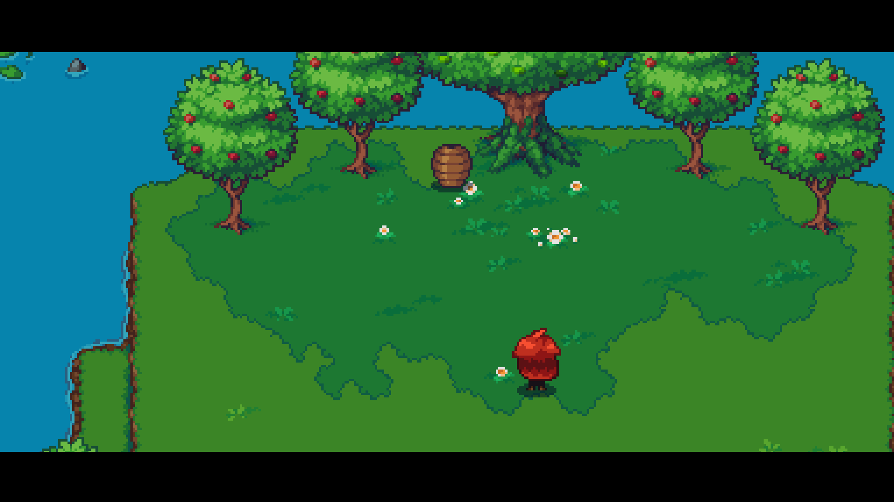
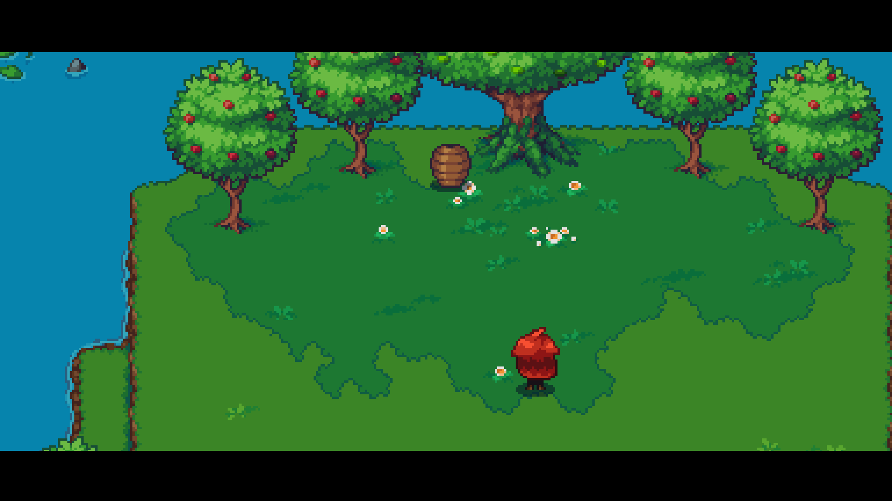


 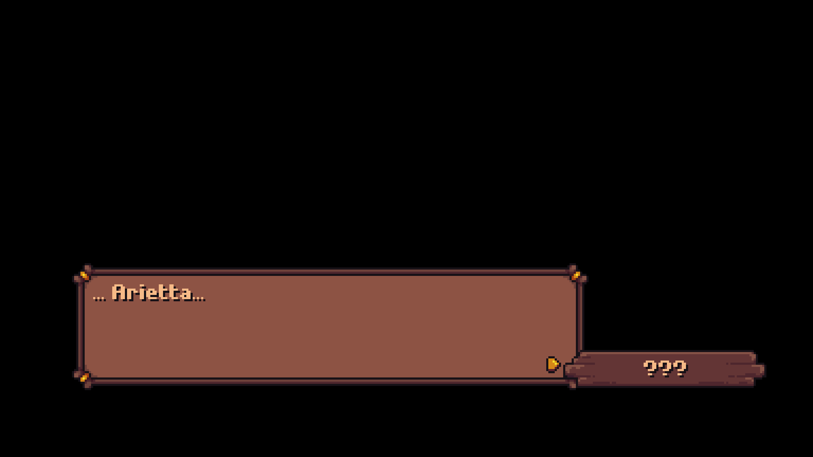
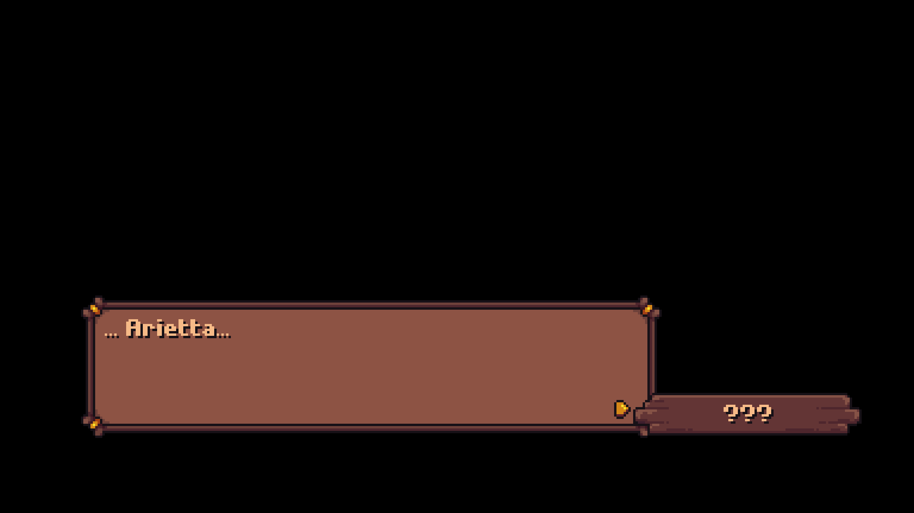You talk with your parents and grandmother. They have a very loving and supportive relationship. The grandmother has a bit of a different situation though because she died around a year ago. You meet her because she got caught between life and death because of an unbreakable promise she made. This is why Arco approaches you, as a Spirit Guide he is there to guide you through fulfilling her promise so that she is no longer stuck in the middle realm.
The basic tutorial-like goal was to gather apples for Mom. Along the way, Dad gives you a wooden sword to defend yourself from the wasps. Once you get through the wasps and to the apple trees, in order to leave you must fight the queen wasp boss battle.
So, in the beginning, you retrieve apples for your mother’s mini mission. Once you set out on that mission, your father gives you a wooden sword. Along the way is mostly figuring out how to get to your destination and fighting creatures. Once you get near the end, your sword will get a fun power up!
 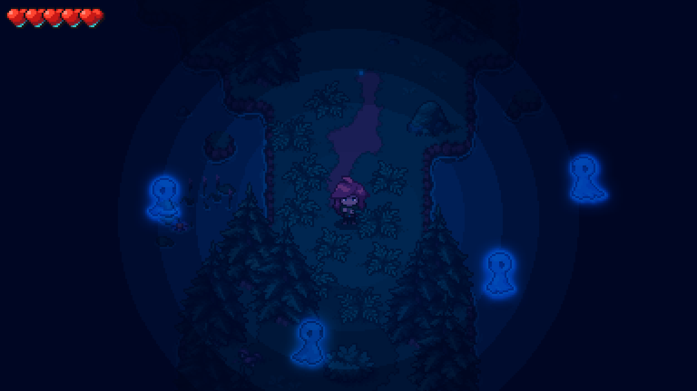
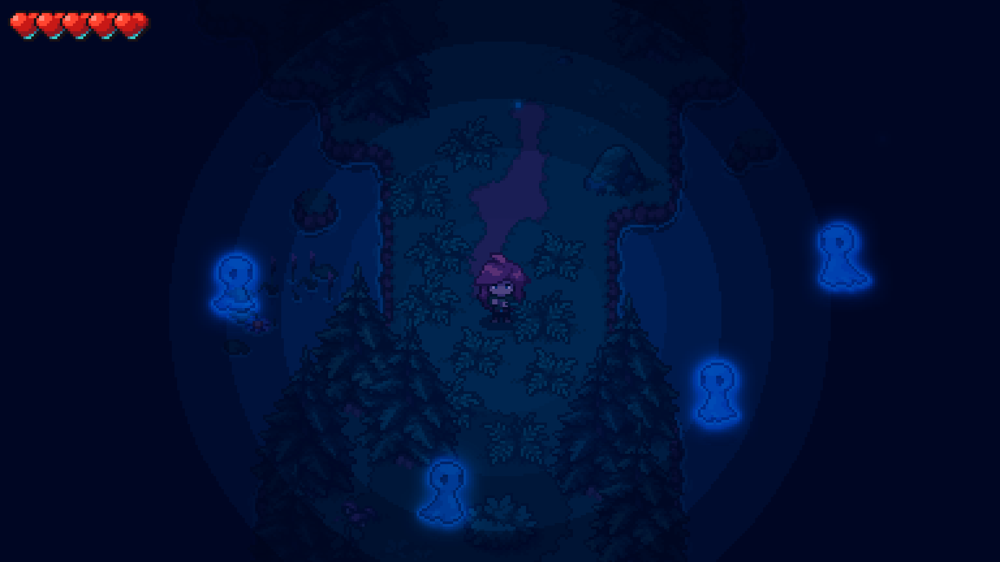


 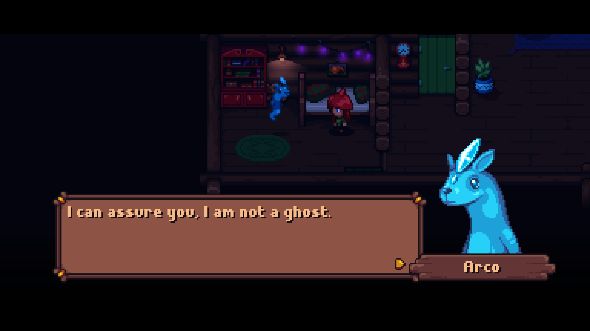
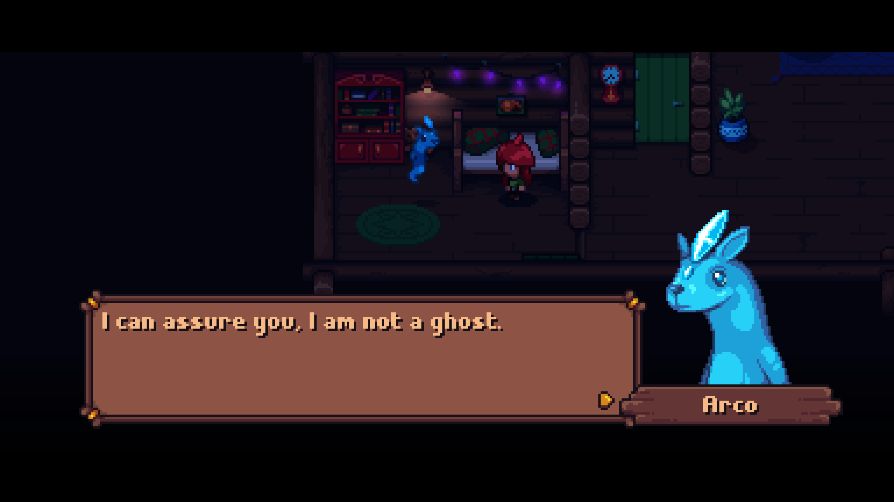

ARCO!!! Arco is a fun character that is a supportive second to Arietta (Arco is not a playable character…directly). He has a quirky and almost comedic personality. Those traits along with his delightful design makes him a great buddy-character. (I will stop praising Arco now...)
After that, you need to set out on Grandma’s quest (I’m being nonspecific for those who want to try it out). Using what you have learned, you fight creatures and find your way through the forest to complete Grandma’s quest.

 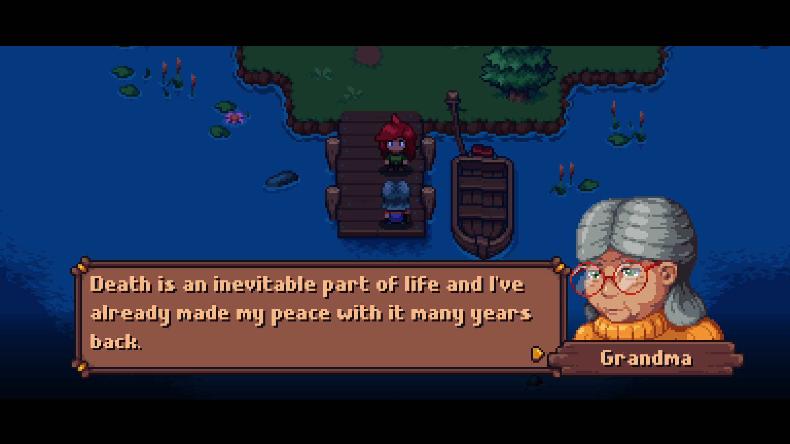
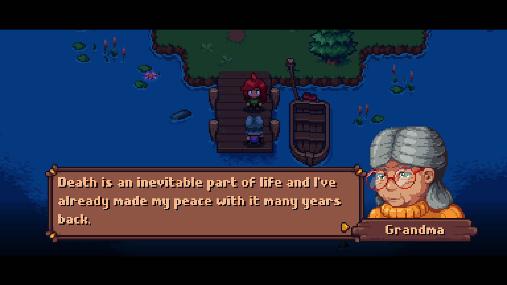


I do not think the game has meta commentary. The story and dialogue are contained within its world.
I think this game does make a comment on how serious promises should be taken. The grandmother literally could not completely die because of a promise she made to her daughter, which she did not get to fulfill in life.